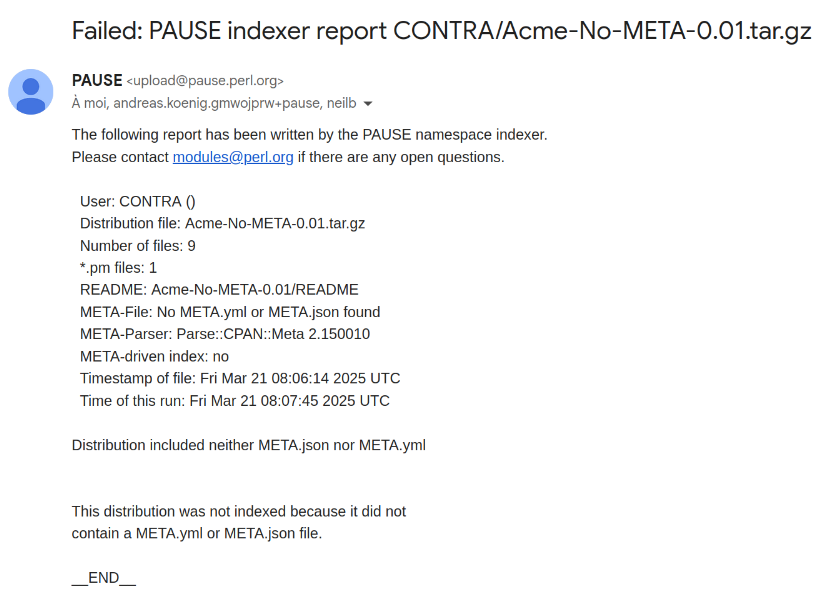

Answering questions about CPAN that nobody asked ...the sequel
Toolchain abundance
Acme::Both::MakefilePL::And::BuildPL ```text ----Acme::Both::MakefilePL::And::buildPL--- | | | | | Makefile.PL Build.PL | | | | | ------------------------------------------- ```
cpanm runs Build.PL ```text [1|3] $ cpanm Acme::Both::MakefilePL::And::BuildPL Configuring Acme-Both-MakefilePL-And-BuildPL-0.03 Running Build.PL -> OK ```
cpm runs Build.PL ```text [1|3] $ cpm install Acme::Both::MakefilePL::And::BuildPL Configuring distribution Executing /usr/bin/perl Build.PL Created MYMETA.yml and MYMETA.json ```
Toolchain scarcity
Acme::No::MakefilePL::No::BuildPL
cpanm breaks ```text [1|4] $ cpanm Acme::No::MakefilePL::No::BuildPL@0.01 Configuring Acme-No-MakefilePL-No-BuildPL-0.01 -> N/A -> FAIL The distribution doesn't have a proper Makefile.PL/Build.PL ```
cpm breaks ```text [1|3] $ cpm install Acme::Both::MakefilePL::And::BuildPL@0.01 Configuring distribution Failed to configure distribution ```
Static install (in META.*) to the rescue ```text [4] name: Acme-No-MakefilePL-No-BuildPL version: 0.03 ... x_static_install: 1 ```
cpm is happy ```text [1|4,9] $ cpm install Acme::No::MakefilePL::No::BuildPL --verbose DONE resolve (0.149sec) Acme::No::MakefilePL::No::BuildPL -> Acme-No-MakefilePL-No-BuildPL-0.03 (from MetaDB) DONE fetch (0.167sec) Acme-No-MakefilePL-No-BuildPL-0.03 DONE configure (0.003sec) Acme-No-MakefilePL-No-BuildPL-0.03 DONE resolve (0.019sec) Acme::Prereq::None -> Acme-Prereq-None-0.01 (from MetaDB) DONE fetch (0.049sec) Acme-Prereq-None-0.01 DONE configure (0.092sec) Acme-Prereq-None-0.01 DONE install (0.181sec) Acme-Prereq-None-0.01 DONE install (0.034sec) Acme-No-MakefilePL-No-BuildPL-0.03 2 distributions installed. ```
cpanm breaks ```text [1|5] $ cpanm Acme::No::MakefilePL::No::BuildPL --> Working on Acme::No::MakefilePL::No::BuildPL Fetching http://www.cpan.org/authors/id/C/CO/CONTRA/Acme-No-MakefilePL-No-BuildPL-0.03.tar.gz ... OK Configuring Acme-No-MakefilePL-No-BuildPL-0.03 ... N/A ! The distribution doesn't have a proper Makefile.PL/Build.PL ``` (but is not supposed to)
Metadatas scarcity
Acme::No::META
No problem for cpanm ```text [1|7] $ cpanm Acme::No::META --> Working on Acme::No::META Fetching http://cpan.metacpan.org/authors/id/C/CO/CONTRA/Acme-No-META-0.01.tar.gz ... OK Configuring Acme-No-META-0.01 ... OK Building and testing Acme-No-META-0.01 ... OK Successfully reinstalled Acme-No-META-0.01 1 distribution installed ```
No problem for cpm ```text [1|3] $ cpm install Acme::No::META DONE install Acme-No-META-0.01 1 distribution installed. ```
Also in 2025, it's not allowed anymore (not indexed) 
A bit of privacy please
"By convention, the top-level Local namespace should never conflict with anything on CPAN. This allows you to be confident that the name you choose under Local isn't going to conflict with anything from the outside world."
But [Local::Acme](https://metacpan.org/pod/Local::Acme) is indexable ```text [1|3] $ cpm install Local::Acme DONE install Local-Acme-0.01 1 distribution installed. ```
And installable ```text [1|3] $ cpm install Local::Acme DONE install Local-Acme-0.01 1 distribution installed. ```
Navigating at border of the index
Acme::Not::Indexed
Transparently installed by cpm ```text [1|6] $ cpm install Acme::Not::Indexed --verbose DONE resolve (0.518sec) Acme::Not::Indexed -> Acme-Not-Indexed-0.01 (from MetaCPAN) DONE fetch (0.149sec) Acme-Not-Indexed-0.01 DONE configure (0.089sec) Acme-Not-Indexed-0.01 DONE install (0.200sec) Acme-Not-Indexed-0.01 1 distribution installed. ```
(Almost) transparently installed by cpm ```text [1|2|8] $ cpanm Acme::Not::Indexed ! Finding Acme::Not::Indexed on cpanmetadb failed. --> Working on Acme::Not::Indexed Fetching http://cpan.metacpan.org/authors/id/C/CO/CONTRA/Acme-Not-Indexed-0.01.tar.gz ... OK Configuring Acme-Not-Indexed-0.01 ... OK Building and testing Acme-Not-Indexed-0.01 ... OK Successfully installed Acme-Not-Indexed-0.01 1 distribution installed ```
Not status "latest" but "cpan" in MetaCPAN fastapi
Actually it is not different than a TRIAL
MetaCPAN Index is too nice?
Uploading again and again the same version
Common belief: It's not possible
It's actually only impossible to upload the same *distribution* (file)
Acme::Same::Version
Overwrite 0.01 with patched version
MetaDB "history"
It leads to an annoying "freshness" choice problem (when pinning)
cpm installs latest "-patched" ```text [1|2] $ cpm install Acme::Version::Same@0.01 --verbose DONE resolve (0.115sec) Acme::Version::Same -> Acme-Version-Same-0.01-patched (from MetaDB) DONE fetch (0.198sec) Acme-Version-Same-0.01-patched DONE configure (0.087sec) Acme-Version-Same-0.01-patched DONE install (0.178sec) Acme-Version-Same-0.01-patched 1 distribution installed.
cpanm installs wrong one ```text [1|2] $ cpanm Acme::Version::Same@0.01 --force --> Working on Acme::Version::Same Fetching http://backpan.perl.org/authors/id/C/CO/CONTRA/Acme-Version-Same-0.01.tar.gz ... OK Configuring Acme-Version-Same-0.01 ... OK Building and testing Acme-Version-Same-0.01 ... OK Successfully reinstalled Acme-Version-Same-0.01 1 distribution installed ```
It exist in the wild, e.g. [Pod::Simple::HTMLLegacy]( https://cpanmetadb.plackperl.org/v1.0/history/Pod::Simple::HTMLLegacy) (from core Pod::Simple)
More common for "non lead modules"
Extra bits: - [Acme::CPAN::Testers::PreReqNotIndexed](https://metacpan.org/pod/Acme::CPAN::Testers::PreReqNotIndexed) (BINGOS) - [Acme::CuckooMith](https://metacpan.org/dist/Acme-CuckooMith) (MITHALDU) (similar to [Alt::Crypt::RSA::BigInt](https://metacpan.org/pod/Alt::Crypt::RSA::BigInt) (DANAJ))
🤗 This is the end of our second tour of CPAN odities
Thank you!